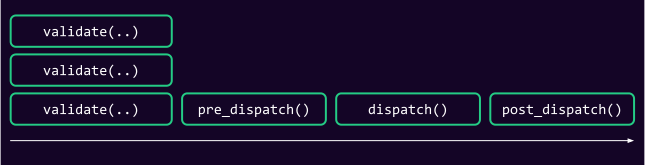

<!DOCTYPE html>
<html lang="en">

<head>
  <meta charset="utf-8" />
  <meta name="viewport" content="width=device-width, initial-scale=1.0, maximum-scale=1.0, user-scalable=no" />

  <title>Signed Extensions</title>
  <link rel="shortcut icon" href="./../../../assets/favicon.ico" />
  <link rel="stylesheet" href="./../../../dist/reset.css" />
  <link rel="stylesheet" href="./../../../dist/reveal.css" />
  <link rel="stylesheet" href="./../../../assets/styles/PBA-theme.css" id="theme" />
  <link rel="stylesheet" href="./../../../css/highlight/shades-of-purple.css" />

  <link rel="stylesheet" href="./../../.././assets/styles/custom-classes.css" />

</head>

<body class="site">
  <header class="site-header">
    <!-- This logo is a link only on the watching server, not the production build -->
    <a href="">
      
    </a>
  </header>
  <main class="reveal">
    <article class="slides">
      <section ><section data-markdown><script type="text/template">

# Signed Extensions
</script></section><section data-markdown><script type="text/template">
- In this lecture you will learn above one of the most advance FRAME concepts, _Signed Extensions_.

* They allow for a multitude of custom features to be added to FRAME transactions.
</script></section></section><section ><section data-markdown><script type="text/template">
## History

- Signed Extensions originally where added to implement tipping in a reasonable way.

* Originally, your dumb instructor (@kianenigma) had the idea of hard-coding it into the `UncheckedExtrinsic`, until @gavofyork jumped in with the idea of signed extensions.

> [Tipped Transaction Type. by kianenigma · Pull Request #2930 · paritytech/substrate](https://github.com/paritytech/substrate/pull/2930/files) > [Extensible transactions (and tips) by gavofyork · Pull Request #3102 · paritytech/substrate](https://github.com/paritytech/substrate/pull/3102/files)
</script></section><section data-markdown><script type="text/template">
### History

- In essence, they are a generic way to **extend** the transaction. Moreover, if they have additional payload, it is signed, therefore _`SignedExtension`_.
</script></section></section><section ><section data-markdown><script type="text/template">
## Anatomy

A signed extension can be either combination of the following things:

- Some additional data that is attached to the transaction.
  - The tip!

<!-- .element: class="fragment" -->

- Some hooks that are executed before and after the transaction is executed.
  - Before each transaction is executed, it must pay its fee upfront.
  - Perhaps refund the fee partially 🤑.

<!-- .element: class="fragment" -->
</script></section><section data-markdown><script type="text/template">
### Anatomy

- Some additional validation logic that is used to validate the transaction, and give feedback to the pool.
  - Set priority of transaction priority based on some metric!

<!-- .element: class="fragment" -->

- Some additional data that must be present in the signed payload of each transaction.
  - Data that the sender has, the chain also has, it is not communicated itself, but it is part of the signature payload.
  - Spec version and genesis hash is part of all transaction's signature payload!

<!-- .element: class="fragment" -->
</script></section><section data-markdown><script type="text/template">
### Anatomy: Let's Peek at the Trait

```rust [1-100|4|6-7|9-10|12]
pub trait SignedExtension:
	Codec + Debug + Sync + Send + Clone + Eq + PartialEq + StaticTypeInfo
{
	fn additional_signed(&self) -> Result<Self::AdditionalSigned, TransactionValidityError>;

	fn validate(..) -> TransactionValidity;
	fn validate_unsigned(..) -> TransactionValidity;

	fn pre_dispatch() -> Result<Self::Pre, TransactionValidityError>;
	fn pre_dispatch_unsigned() -> Result<(), TransactionValidityError>;

	fn post_dispatch() -> Result<(), TransactionValidityError>;
}
```
</script></section></section><section ><section data-markdown><script type="text/template">
## Grouping Signed Extension

- Is also a signed extension itself!

- You can look at the implementation yourself.. but the TLDR is:

- Main takeaways:
  - `type AdditionalSigned = (SE1::AdditionalSigned, SE2::AdditionalSigned)`,
  - all of hooks:
    - Executes each individually, combines results

<aside class="notes"><p>TODO: how <code>TransactionValidity</code> is <code>combined_with</code> is super important here, but probably something to cover more in 4.3 and recap here.</p>
</aside></script></section><section data-markdown><script type="text/template">
## Usage In The Runtime

- Each runtime has a bunch of signed extensions. They can be grouped as a tuple

```rust
pub type SignedExtra = (
	frame_system::CheckNonZeroSender<Runtime>,
	frame_system::CheckSpecVersion<Runtime>,
	frame_system::CheckTxVersion<Runtime>,
	frame_system::CheckGenesis<Runtime>,
	pallet_asset_tx_payment::ChargeAssetTxPayment<Runtime>,
);

type UncheckedExtrinsic = generic::UncheckedExtrinsic<Address, Call, Signature, SignedExtra>;
```

- Signed extensions might originate from a pallet, but are applied to ALL EXTRINSICS 😮‍💨!

<aside class="notes"><p>We will get to this later as well, but recall that SignedExtensions are not a <em>FRAME/Pallet</em>
concept per se. FRAME just implements them. This also implies that everything regarding signed
extensions is applied to <strong>all transactions</strong>, throughout the runtime.</p>
</aside></script></section></section><section  data-markdown><script type="text/template">
## Encoding

```rust
struct Foo(u32, u32);
impl SignedExtension for Foo {
  type AdditionalSigned = u32;
  fn additional_signed(&self) -> Result<Self::AdditionalSigned, TransactionValidityError> {
    Ok(42u32)
  }
}

pub struct UncheckedExtrinsic<Address, Call, Signature, (Foo)>
{
	pub signature: Option<(Address, Signature, Extra)>,
	pub function: Call,
}
```

- 2 u32 are decoded as, `42u32` is expected to be in the signature payload.

<aside class="notes"><p>Here&#39;s the <code>check</code> function of <code>CheckedExtrinsic</code> extensively documented to demonstrate this:</p>
<pre><code class="language-rust">// SignedPayload::new
pub fn new(call: Call, extra: Extra) -&gt; Result&lt;Self, TransactionValidityError&gt; {
    // asks all signed extensions to give their additional signed data..
    let additional_signed = extra.additional_signed()?;
    // this essentially means: what needs to be signed in the signature of the transaction is:
    // 1. call
    // 2. signed extension data itself
    // 3. any additional signed data.
    let raw_payload = (call, extra, additional_signed);
    Ok(Self(raw_payload))
}

// UncheckedExtrinsic::check
fn check(self, lookup: &amp;Lookup) -&gt; Result&lt;Self::Checked, TransactionValidityError&gt; {
    Ok(match self.signature {
        Some((signed, signature, extra)) =&gt; {
            let signed = lookup.lookup(signed)?;
            // this is the payload that we expect to be signed, as explained above.
            let raw_payload = SignedPayload::new(self.function, extra)?;
            // encode the signed payload, and check it against the signature.
            if !raw_payload.using_encoded(|payload| signature.verify(payload, &amp;signed)) {
                return Err(InvalidTransaction::BadProof.into())
            }

            // the extra is passed again to `CheckedExtrinsic`, see in the next section.
            let (function, extra, _) = raw_payload.deconstruct();
            CheckedExtrinsic { signed: Some((signed, extra)), function }
        },
        // we don&#39;t care about signed extensions at all.
        None =&gt; CheckedExtrinsic { signed: None, function: self.function },
    })
}
</code></pre>
</aside></script></section><section ><section data-markdown><script type="text/template">
## Transaction Pool Validation

- Each pallet also has `#[pallet::validate_unsigned]`.
- This kind of overlaps with creating a signed extension and implementing `validate_unsigned`.

<aside class="notes"><p><a href="https://github.com/paritytech/substrate/issues/6102">https://github.com/paritytech/substrate/issues/6102</a>
<a href="https://github.com/paritytech/substrate/issues/4419">https://github.com/paritytech/substrate/issues/4419</a></p>
</aside></script></section><section data-markdown><script type="text/template">
### Transaction Pool Validation

- Recall that transaction pool validation should be minimum effort and static.
- In `executive`, we only do the following:
  - check signature.
  - call `Extra::validate`/`Extra::validate_unsigned`
  - call `ValidateUnsigned::validate`, if unsigned.
  - NOTE dispatching ✅!

<aside class="notes"><blockquote>
<p>Transaction queue is not part of the consensus system. Validation of transaction are <em>free</em>. Doing
too much work in validation of transactions is essentially opening a door to be DOS-ed.</p>
</blockquote>
</aside></script></section><section data-markdown><script type="text/template">
### Transaction Pool Validation

- Crucially, you should make sure that you re-execute anything that you do in transaction pool validation in dispatch as well:

```rust
/// Do any pre-flight stuff for a signed transaction.
///
/// Make sure to perform the same checks as in [`Self::validate`].
fn pre_dispatch() -> Result<Self::Pre, TransactionValidityError>;
```

- Because conditions that are not stateless might change over time!
</script></section></section><section  data-markdown><script type="text/template">
## Post Dispatch

- The dispatch result, plus generic type (`type Pre`) returned from `pre_dispatch` is passed to `post_dispatch`.
- See [`impl Applyable for CheckedExtrinsic`](https://github.com/paritytech/substrate/blob/a47f200eebeb88a5bde6f1ed2be9728b82536dde/primitives/runtime/src/generic/checked_extrinsic.rs#L69) for more info.
</script></section><section ><section data-markdown><script type="text/template">
## Notable Signed Extensions

- These are some of the default signed extensions that come in FRAME.
- See if you can predict how they are made!
</script></section><section data-markdown><script type="text/template">
### `ChargeTransactionPayment`

Charge payments, refund if `Pays::Yes`.

```rust
type Pre = (
  // tip
  BalanceOf<T>,
  // who paid the fee - this is an option to allow for a Default impl.
  Self::AccountId,
  // imbalance resulting from withdrawing the fee
  <<T as Config>::OnChargeTransaction as OnChargeTransaction<T>>::LiquidityInfo,
);
```

<!-- .element: class="fragment" -->
</script></section><section data-markdown><script type="text/template">
### `check_genesis`

Wants to make sure you are signing against the right chain.

Put the genesis hash in `additional_signed`.

<!-- .element: class="fragment" -->

`check_spec_version` and `check_tx_version` work very similarly.

<!-- .element: class="fragment" -->
</script></section><section data-markdown><script type="text/template">
### `check_non_zero_sender`

- interesting story: any account can sign on behalf of the `0x00` account.
- discovered by [@xlc](https://github.com/xlc).
- uses `pre_dispatch` and `validate` to ensure the signing account is not `0x00`.

<aside class="notes"><p><a href="https://github.com/paritytech/substrate/issues/10413">https://github.com/paritytech/substrate/issues/10413</a></p>
</aside></script></section><section data-markdown><script type="text/template">
### `check_nonce`

- `pre_dispatch`: check nonce and actually update it.
- `validate`: check the nonce, DO NOT WRITE ANYTHING, set `provides` and `requires`.

<!-- .element: class="fragment" -->

<div>

- remember that:
  - `validate` is only for lightweight checks, no read/write.
  - anything you write to storage is reverted anyhow.

</div>

<!-- .element: class="fragment" -->
</script></section><section data-markdown><script type="text/template">
### `check_weight`

- Check there is enough weight in `validate`.
- Check there is enough weight, and update the consumed weight in `pre_dispatch`.
- Updated consumed weight in `post_dispatch`.

<!-- .element: class="fragment" -->
</script></section></section><section ><section data-markdown><script type="text/template">
## Big Picture: Pipeline of Extension

- Signed extensions (or at least the `pre_dispatch` and `validate` part) remind me of the extension
  system of `express.js`, if any of you know what that is
</script></section><section data-markdown><script type="text/template">
## Big Picture: Pipeline of Extension


</script></section></section><section  data-markdown><script type="text/template">
## Exercises

- Walk over the notable signed extensions above and riddle each other about how they work.
- SignedExtensions are an important part of the transaction encoding. Try and encode a correct
  transaction against a template runtime in any language that you want, using only a scale-codec
  library.
- SignedExtensions that logs something on each transaction
- SignedExtension that keeps a counter of all transactions
- SignedExtensions that keeps a counter of all successful/failed transactions
- SignedExtension that tries to refund the transaction from each account as long as they submit less
  than 1tx/day.
</script></section>
    </article>
  </main>

  <script src="./../../../dist/reveal.js"></script>

  <script src="./../../../plugin/markdown/markdown.js"></script>
  <script src="./../../../plugin/highlight/highlight.js"></script>
  <script src="./../../../plugin/zoom/zoom.js"></script>
  <script src="./../../../plugin/notes/notes.js"></script>
  <script src="./../../../plugin/math/math.js"></script>

  <script src="./../../../assets/plugin/mermaid.js"></script>
  <script src="./../../../assets/plugin/mermaid-theme.js"></script>

  <script src="./../../../assets/plugin/chart/chart.js"></script>
  <script src="./../../../assets/plugin/chart/chart.min.js"></script>

  <script src="./../../../assets/plugin/tailwindcss.min.js"></script>

  <script>
    function extend() {
      var target = {};
      for (var i = 0; i < arguments.length; i++) {
        var source = arguments[i];
        for (var key in source) {
          if (source.hasOwnProperty(key)) {
            target[key] = source[key];
          }
        }
      }
      return target;
    }

    // default options to init reveal.js
    var defaultOptions = {
      controls: true,
      progress: true,
      history: true,
      center: true,
      transition: 'default', // none/fade/slide/convex/concave/zoom
      slideNumber: true,
      mermaid: {
        startOnLoad: false,
        logLevel: 3,
        theme: 'base',
        themeVariables: {
          primaryColor: purple,
          primaryTextColor: white,
          primaryBorderColor: pink,
          lineColor: pink,
          secondaryColor: lightPurple,
          tertiaryColor: lightPurple,
        },
      },
      chart: {
        defaults: {
          color: 'lightgray', // color of labels
          scale: {
            beginAtZero: true,
            ticks: { stepSize: 1 },
            grid: { color: "lightgray" }, // color of grid lines
          },
        },
        line: { borderColor: ["#ccc", "#E6007A", "#6D3AEE"], "borderDash": [[5, 10], [0, 0]] },
        bar: { backgroundColor: ["#ccc", "#E6007A", "#6D3AEE"] },
      },
      plugins: [
        RevealMarkdown,
        RevealHighlight,
        RevealZoom,
        RevealNotes,
        RevealMath,
        RevealMermaid,
        RevealChart
      ]
    };

    // options from URL query string
    var queryOptions = Reveal().getQueryHash() || {};

    var options = extend(defaultOptions, {"width":1400,"height":900,"margin":0,"minScale":0.2,"maxScale":2,"transition":"none","controls":true,"progress":true,"center":true,"slideNumber":true,"backgroundTransition":"fade"}, queryOptions);
  </script>


  <script>
    Reveal.initialize(options);
  </script>
</body>

</html>